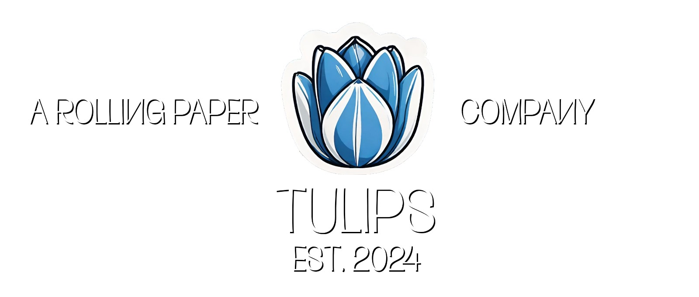

|  | Producten Over Contact |
"Going dutch!"Hét eco-vriendelijke rolmerk uit Haarlem. |
Tulips Rolling Papers, opgericht in 2024 in Haarlem door 2 vrienden, is een toonaangevend merk in eco-vriendelijke rolpapierproducten. Onze missie is om hoogwaardige en duurzame rolpapieren te leveren die voldoen aan de behoeften van zowel enthousiaste rokers als milieubewuste consumenten.
We streven ernaar om innovatieve en unieke producten aan te bieden die niet alleen van de hoogste kwaliteit zijn, maar ook een positieve impact hebben op het milieu. Bij Tulips Rolling Papers geloven we in het verbinden van mensen door middel van premium rolpapieren die zorgen voor een soepele en bevredigende rookervaring, terwijl we tegelijkertijd onze ecologische voetafdruk minimaliseren.